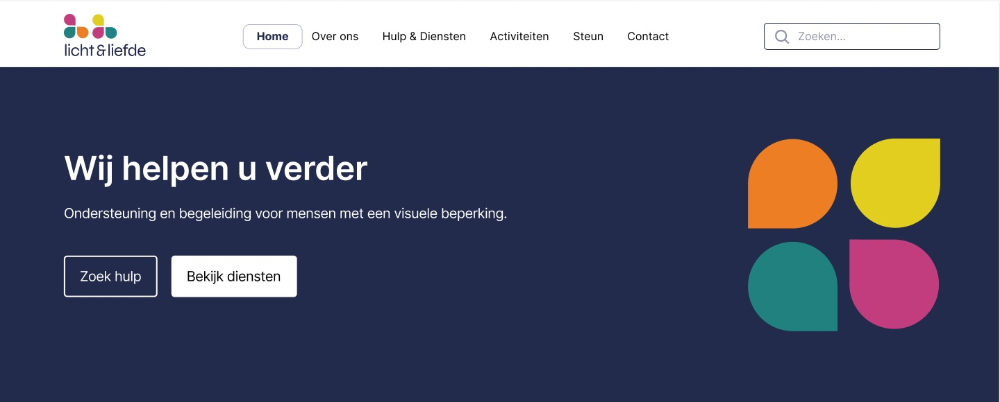
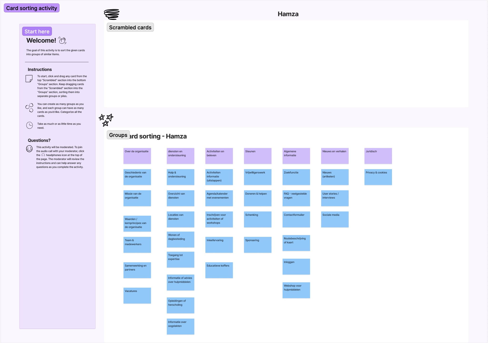
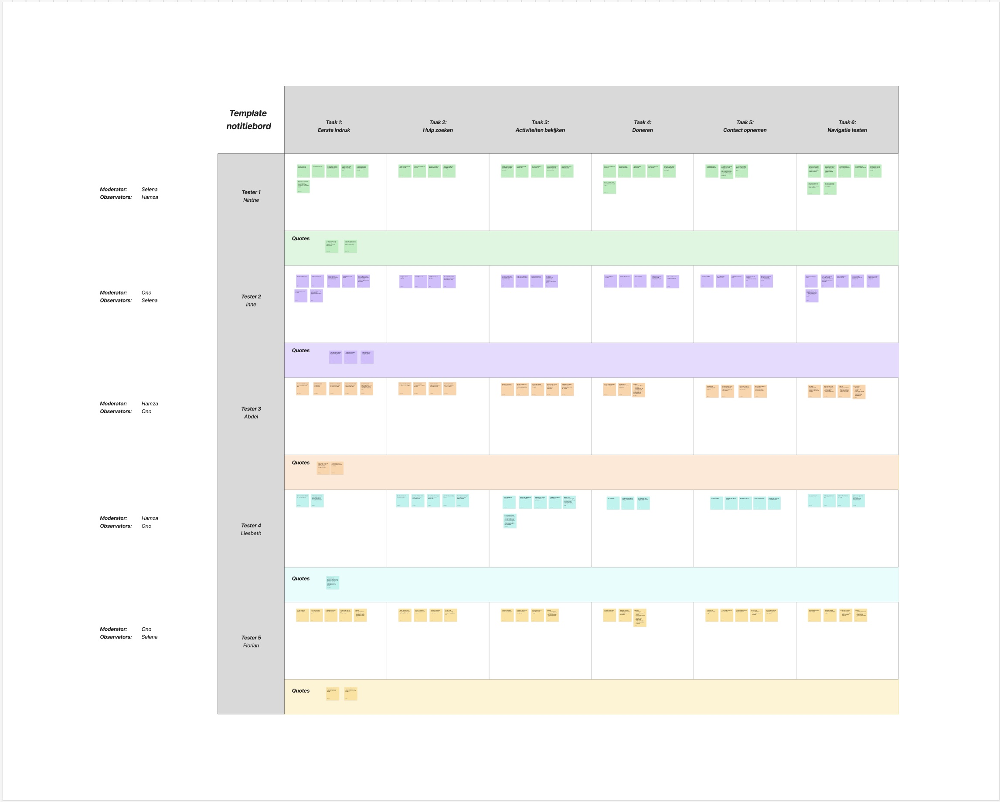

Licht & Liefde ondersteunt mensen met een visuele beperking in hun dagelijks leven, zodat ze zelfstandig kunnen functioneren.
Met een team van drie herwerkten we de structuur en het ontwerp van de website voor slechtziende bezoekers: van een analyse van de huidige site en card sorting tot een nieuwe navigatie en een klikbaar prototype.

We startten met een sitemap van de bestaande website. Die bleek diep en ingedeeld per doelgroep in plaats van per onderwerp. Doneren had geen eigen plek in het menu en contactgegevens stonden verspreid over meerdere pagina's.
Met een open card sorting — 33 kaartjes, drie testers — keken we hoe bezoekers de inhoud zelf zouden groeperen.
Over de organisatie, hulp & diensten, activiteiten en steunen vormden telkens een eigen groep.
Begrippen als „Toegang tot expertise”, „Inleefervaring” en „Educatieve koffers” waren onbekend en moeilijk te plaatsen.
„Een zoekbalk zou handig zijn op elke pagina.”

Op basis van de card sorting bouwden we een nieuwe structuur met zes hoofdonderdelen: Home, Over ons, Hulp & Diensten, Activiteiten, Steunen en Contact — met een zoekbalk op elke pagina.
Het uitgewerkte ontwerp in Figma. Klik zelf door het prototype.
Onze hypothese: bezoekers begrijpen zonder uitleg wat Licht & Liefde aanbiedt en vinden binnen één à twee minuten hun weg naar hulp, activiteiten, doneren of contact.
We testten het prototype met vijf deelnemers, één op één en met think-aloud, in zes taken: eerste indruk, hulp zoeken, je inschrijven voor een activiteit, doneren, contact opnemen en terug naar home. We wisselden telkens af als moderator en observator, en verzamelden alle observaties en quotes per taak op één notitiebord.

Branding en web design — case study volgt binnenkort.